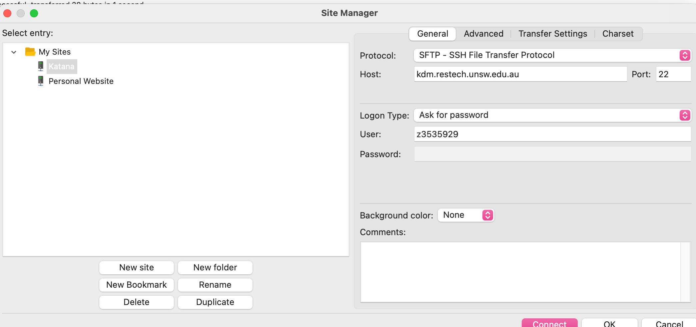
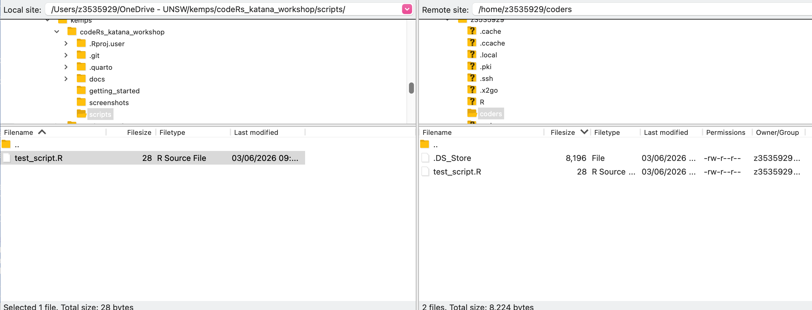

Transferring files
Options for transferring files
- Option 1: Use a file transfer program
- This option is probably best for most people.
- Katana recommends FileZilla.
- Option 2: Use git
- Requires command-line knowledge of git.
- Ensures consistency of file versions across machines.
- No need to remember if the file on katana is the latest version!
- I will not cover this option, but feel free to ask me about it.
Let’s transfer a file!
Create a file on your local machine
- Create an R script called test_script.R, or download from the github repo scripts/test_script.R
- Your script should print something out.
Set up a folder on katana
In your terminal, run:
mkdir coderscd coders
Set up FileZilla
Setting up your connection to katana

Transfer your file
Transfer to your new coders directory.
